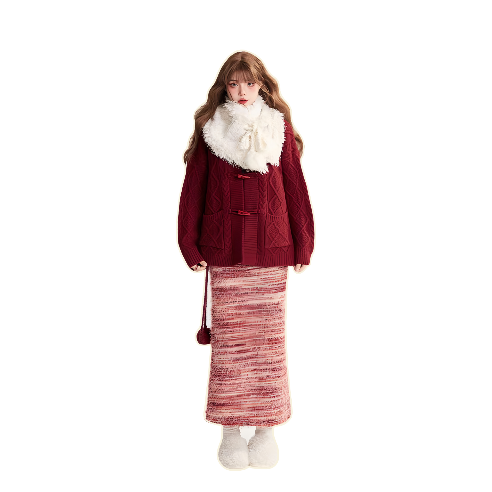
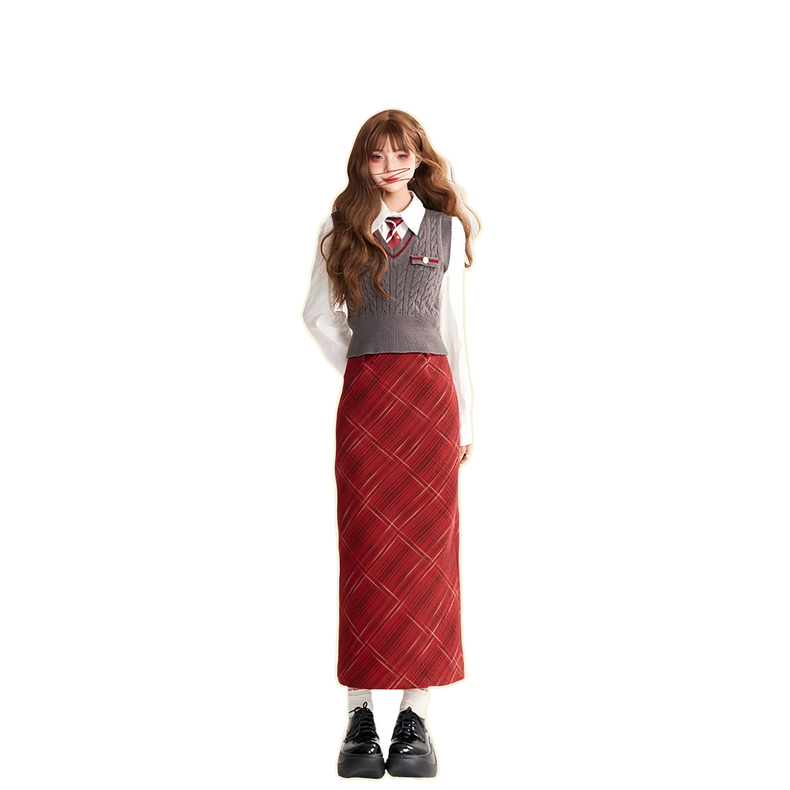
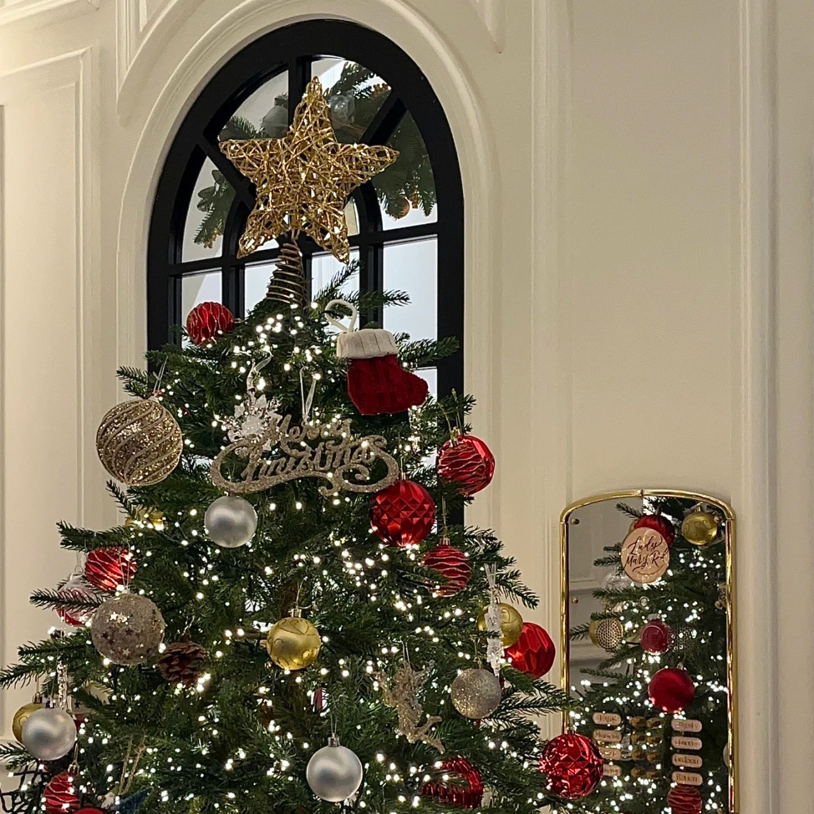
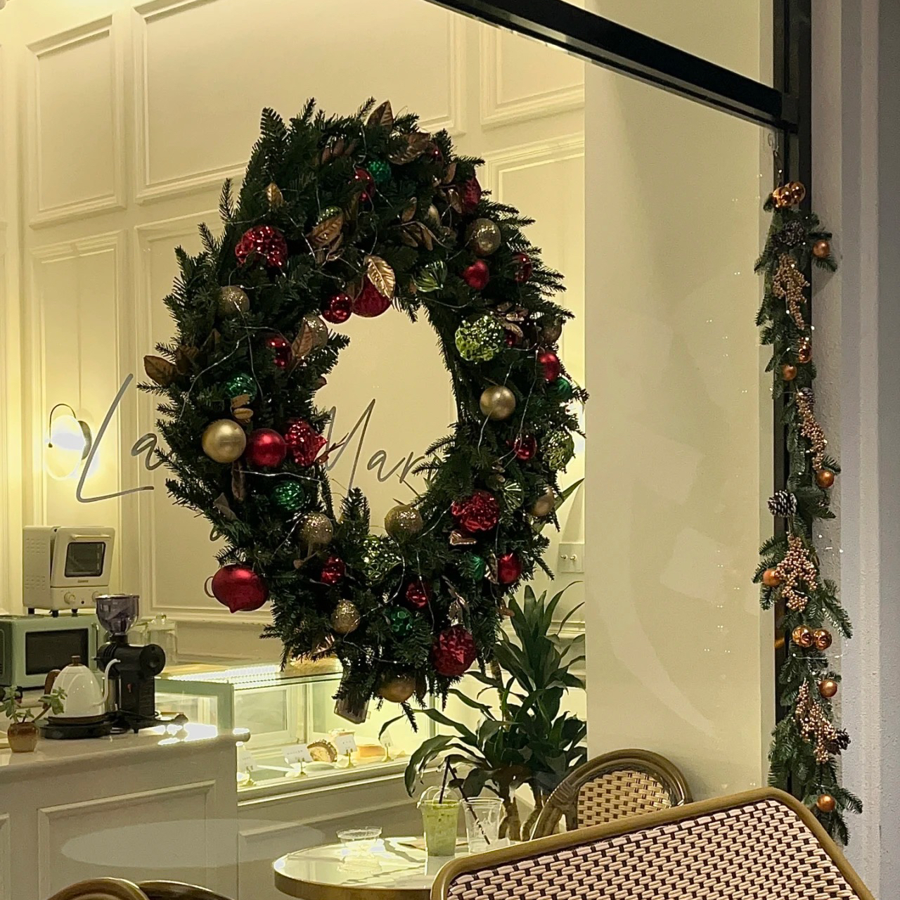

Dressing to Celebrate Thanksgiving! ↓
Previous
Next



Collection 1 Warmth
Strike!
Oversized Scarf, Knitted Sweater, Long Hip Skirt

Collection 2 Quick
-witted!
White Shirt, Knitted Waistcoat, Long Plaid Dress
NEXT